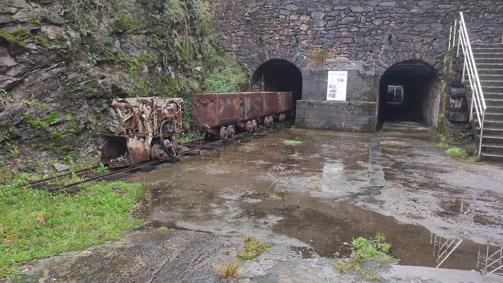

스페인 바스크 오이아르춘, 시청·에너지공동체 등 10곳 '아로아' 10대 원칙…"재생에너지 발전은 비영리·공공 주체가, 지역 공동체 통제 아래"

협동조합·학교·청년 모임 함께 서명, "필요한지가 아니라 어떻게 조직하느냐가 문제"…렙솔 풍력 2곳엔 '불신', 누구나 동참 신청 가능
스페인 바스크 지방 기푸스코아주 오이아르춘(Oiartzun)의 시청과 에너지공동체·협동조합·학교 등 지역 주체 10곳이 생태·사회 전환의 10대 원칙 '아로아(Aroa)'를 합의해 발표하고, 재생에너지 발전은 비영리 조직과 공공 주체가 맡아 지역 공동체의 통제 아래 두어야 한다고 밝혔다. 서명에는 에너지공동체 아르기투리(Argitturri), 협동조합 엘리카(Elika), 소비자 모임 아라스탈로(Arraztalo), 바스크어 학교 이카스톨라 하우르차로(Haurtzaro), 엘리살데 마을학교 학부모회, 청년 모임 비유리에네아(Biyurrienea), 오이아르춘 부루하베(Oiartzun Burujabe), 시청 등이 참여했고, 10대 원칙은 재생에너지·지속가능한 교통·소비 줄이기·지역 생산자와 생산·작은 가게·주권·돌봄·공동체·기회의 평등·회복력이다. 서명 주체들은 재생에너지가 필요한지가 아니라 어떻게 조직하느냐가 문제라며, 전체 계획을 세워 발전을 비영리·공공 주체로 넘기고 더 공정한 분배를 보장하되 자연을 존중하는 방식이어야 한다고 했다. 이들은 아이아코 하리아 일대 렙솔(Repsol)의 풍력 사업 두 곳(도미코·에레카)이 환경과 시민의 이익을 해칠 수 있다며 "불신"을 밝히고, 주변 지역에서 검토 중인 풍력 사업에도 함께 대응해야 한다고 했다. 발표는 옛 광산 지대가 자연공원으로 바뀐 아르디투리(Arditurri)에서 열렸으며, 단체나 개인 누구나 오이아르춘 부루하베 웹사이트에서 동참을 신청할 수 있고 서명 주체들은 몇 달 안에 강연 두 번을 열 계획이다.
시민에너지 관점
오이아르춘의 10개 주체가 내건 원칙은 재생에너지에 찬성하느냐 반대하느냐가 아니라 누가 짓고 누가 통제하느냐를 물은 것이고, 독일 남서부 쇠나우 주민들이 1990년대 지역 전력망을 사들여 스스로 전력회사를 세운 것도 같은 물음에서 출발했다. 외부 기업의 풍력에 '불신'을 밝히면 재생에너지 확대를 늦춘다는 우려가 나올 수 있지만, 이들은 재생에너지가 필요하다는 데서 출발해 계획과 분배의 방식을 바꾸자고 했으니 반대가 아니라 다른 길을 내놓은 셈이다. 발전의 주인이 지역 공동체일 때 바람과 햇빛에서 나온 이익이 마을에 남고, 주민이 설비를 제 것으로 여기는 만큼 갈등을 풀 실마리도 생긴다. 우리도 시·군과 협동조합·학교·주민 모임이 함께 지역 에너지 원칙을 먼저 세우고, 그 원칙 위에서 공유자원 개발의 주체와 이익 나눔을 정하는 일부터 시작해야 한다.
출처: El Diario Vasco 2026-11-03 Elena Viñas 원문 보기
スペイン・バスクのオイアルツン、町役場・エネルギー共同体など10団体が「アロア」10原則…「再エネ発電は非営利・公的主体が、地域共同体の管理の下で」
協同組合・学校・若者グループも署名、「必要かどうかではなく、どう組織するかが問題」…レプソルの風力2件には「不信」、誰でも賛同を申し込める
スペイン・バスク地方ギプスコア県オイアルツン（Oiartzun）の町役場とエネルギー共同体・協同組合・学校など地域の10団体が、エコロジカル・社会的転換の10原則「アロア（Aroa）」に合意して発表し、再生可能エネルギーの発電は非営利組織と公的主体が担い、地域共同体の管理の下に置くべきだと表明した。署名にはエネルギー共同体アルギトゥリ（Argitturri）、協同組合エリカ（Elika）、消費者グループのアラスタロ（Arraztalo）、バスク語学校イカストラのハウルツァロ（Haurtzaro）、エリサルデ村立学校の保護者会、若者グループのビユリエネア（Biyurrienea）、オイアルツン・ブルハベ（Oiartzun Burujabe）、町役場などが加わり、10原則は再生可能エネルギー、持続可能な交通、消費の削減、地域の生産者と生産、小さな商店、主権、ケア、共同体、機会の平等、レジリエンスだ。署名団体は、再エネが必要かどうかではなくどう組織するかが問題だとして、全体計画を立てて発電を非営利・公的主体に移し、より公正な分配を保障しつつ、自然を尊重するやり方でなければならないとした。また、アイアコ・ハリア一帯のレプソル（Repsol）の風力事業2件（ドミコ、エレカ）が環境と市民の利益を損なうおそれがあるとして「不信」を表明し、周辺地域で検討中の風力事業にも共同で対応すべきだとした。発表は旧鉱山地帯が自然公園に生まれ変わったアルディトゥリ（Arditurri）で行われ、団体・個人を問わず誰でもオイアルツン・ブルハベのウェブサイトから賛同を申し込むことができ、署名団体は数カ月以内に講演会を2回開く計画だ。
市民エネルギーの視点
オイアルツンの10団体が掲げた原則は、再エネに賛成か反対かではなく、誰が建て誰が管理するのかを問うものであり、ドイツ南西部シェーナウの住民が1990年代に地域の送配電網を買い取り自ら電力会社を立ち上げたのも同じ問いから始まった。外部企業の風力に「不信」を示せば再エネ拡大を遅らせるという懸念も出得るが、彼らは再エネが必要だという前提から出発し、計画と分配のあり方を変えようと言っているのだから、反対ではなく別の道を示したと言える。発電の持ち主が地域共同体であれば風と日差しから生まれる利益が地域に残り、住民が設備を自分のものと感じるほど対立を解く糸口も生まれる。韓国でも市・郡と協同組合・学校・住民グループが共に地域エネルギーの原則をまず定め、その原則の上で共有資源開発の主体と利益の分かち合い方を決めることから始めるべきだ。
出典: El Diario Vasco 2026-11-03 Elena Viñas 原文を読む
西班牙巴斯克奥亚尔尊镇政府、能源社区等10家主体发布"阿罗阿"十项原则…"可再生能源发电应由非营利和公共主体承担，置于地方社区掌控之下"
合作社、学校、青年团体共同签署，"问题不在于是否需要，而在于如何组织"…对雷普索尔两个风电项目表示"不信任"，任何人都可申请加入
西班牙巴斯克地区吉普斯夸省奥亚尔尊（Oiartzun）的镇政府与能源社区、合作社、学校等10家地方主体，就生态与社会转型十项原则"阿罗阿（Aroa）"达成共识并对外发布，表示可再生能源发电应由非营利组织和公共主体承担，并置于地方社区的掌控之下。签署方包括能源社区阿尔吉图里（Argitturri）、合作社埃利卡（Elika）、消费者团体阿拉斯塔洛（Arraztalo）、巴斯克语学校豪尔察罗（Haurtzaro）、埃利萨尔德乡村学校家长会、青年团体比尤里埃内阿（Biyurrienea）、奥亚尔尊自主（Oiartzun Burujabe）以及镇政府等；十项原则是可再生能源、可持续交通、减少消费、本地生产者与生产、小商店、自主、照护、社区、机会平等和韧性。签署方表示，问题不在于是否需要可再生能源，而在于如何组织，应制定整体规划，把发电转交给非营利和公共主体，保障更公平的分配，同时以尊重自然的方式进行。他们认为雷普索尔（Repsol）在阿亚科哈里亚一带的两个风电项目（多米科、埃雷卡）可能损害环境和市民利益，表示"不信任"，并称对周边地区正在研究的风电项目也需要共同应对。发布活动在旧矿区改造成自然公园的阿尔迪图里（Arditurri）举行；团体或个人都可以通过奥亚尔尊自主的网站申请加入，签署方还计划在几个月内举办两场讲座。
市民能源视角
奥亚尔尊10家主体提出的原则，问的不是赞成还是反对可再生能源，而是由谁来建、由谁来掌控；德国西南部舍瑙的居民在1990年代买下当地电网、自己创办电力公司，也是从同一个问题出发的。有人可能担心，对外部企业的风电表示"不信任"会拖慢可再生能源的扩张，但他们是从需要可再生能源这一前提出发，主张改变规划和分配的方式，与其说是反对，不如说是提出了另一条路。当发电的主人是地方社区时，风和阳光带来的收益就留在当地，居民越把设施当作自己的，化解矛盾的线索也就越多。韩国也应先由市、郡与合作社、学校、居民团体共同确立地方能源原则，再在此基础上决定公共资源开发的主体和收益分享方式。
来源: El Diario Vasco 2026-11-03 Elena Viñas 查看原文
Ten local groups in Oiartzun, Basque Country, including the town council and an energy community, adopt the 'Aroa' ten principles: renewable generation should pass to non-profit and public bodies under local community control
Cooperatives, schools and a youth group also sign; "the question is not whether renewables are needed but how they are organised"; signatories voice "distrust" of two Repsol wind projects, and anyone can join
Ten local bodies in Oiartzun, in the Basque province of Gipuzkoa in Spain, among them the town council, an energy community, cooperatives and schools, have agreed on and presented 'Aroa', a set of ten principles for an ecological and social transition, declaring that renewable power generation should be handled by non-profit organisations and public bodies and kept under the control of the local community. The signatories include the energy community Argitturri, the cooperative Elika, the consumer group Arraztalo, the Basque-language school (ikastola) Haurtzaro, the parents' association of the Herri Eskola Elizalde village school, the youth group Biyurrienea, Oiartzun Burujabe and the town council, and the ten principles are renewable energy, sustainable transport, reducing consumption, local producers and production, small shops, sovereignty, care, community, equal opportunities and resilience. The signatories said the debate is not whether renewables are needed but how they should be organised, calling for an overall plan that moves generation to non-profit and public bodies and guarantees a fairer distribution, while respecting nature. They expressed "distrust" of two Repsol wind projects in the Aiako Harria area, Domiko and Erreka, saying they could harm the environment and the interests of citizens, and called for joint work on other wind projects now being studied in the surrounding area. The principles were presented at Arditurri, a former mining area that has become part of a natural park; any group or individual can sign up through the Oiartzun Burujabe website, and the signatories plan to hold two talks in the coming months.
Citizen Energy View
The principles set out by Oiartzun's ten signatories ask not whether to be for or against renewables but who builds them and who controls them, the same question from which the residents of Schönau in south-western Germany started when they bought their local grid in the 1990s and set up their own power company. Some may worry that voicing "distrust" of an outside company's wind farms will slow the growth of renewables, but these groups start from the premise that renewables are needed and propose changing how they are planned and how the benefits are shared, which is less opposition than an alternative path. When the local community owns the generation, the returns from wind and sun stay in the area, and the more residents see the plants as their own, the more room there is to resolve conflict. In Korea, too, cities and counties should first set local energy principles together with cooperatives, schools and residents' groups, and on that basis decide who develops shared resources and how the benefits are divided.
Source: El Diario Vasco 2026-11-03 Elena Viñas Read the original